发信人: MrYang (our2008), 信区: outdoor
标 题: 野外生存协会部长团爆No.2弹の装备部
发信站: 饮水思源 (2012年05月30日00:15:18 星期三)
部门介绍： 装备部负责协会所有装备的租借、归还、清理、修补等等。
部门成员：部长：闫冬辉
副部长：杨瑞、马瑞雪、娄琪琛
——————————————分割：团爆第一波———————————————
在下姓闫名冬辉字俊天号辉煌居士笔名暮云追忆江湖人称雷霆散人网名辉煌的猪心namedD
reamrr。
小生这厢有礼了。
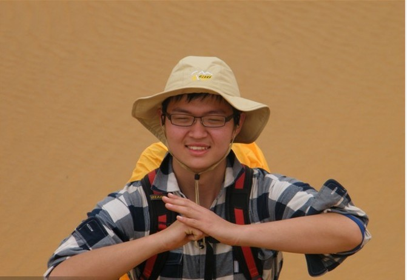 screen.width - 200){this.width = screen.width - 200}">
热爱户外，不仅为了美丽的风景，更为了一圈人为着顶峰冲刺，互相激励互相鼓励，全
力付出的感觉。冒险的激情与互助的柔情，旅途的劳累与心灵的洗礼，远离城市喧嚣给内
心放个假。
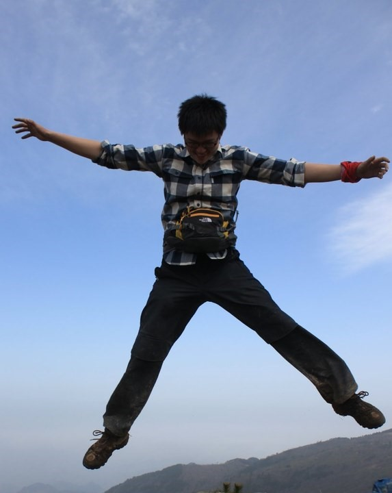 screen.width - 200){this.width = screen.width - 200}">
切格瓦拉曾骑摩托车游遍南美，我的梦想是游遍神州。我想看看祖国的山川河岳，也想知
道各地的人到底是个怎么的样子生活，想了解他们所想所思，也想见识不同的地域文化，
扒开社会看看。
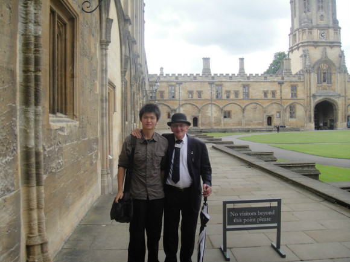 screen.width - 200){this.width = screen.width - 200}">
在装备部的一年里真的是很开心呀；接下来的时间要与野协的兄弟姐妹们一起加油，为协
会的发展贡献自己的一份力量~
——————————————分割：团爆第二波———————————————
姓名：杨瑞（内部称呼：瑞叔）
部门：装备部
爱好：攀岩、跑步、户外
户外经历：大明山协会内部训练、地大冬训、“三尖”穿越、“七尖”穿越、太白行
下面上图：
先来张卖萌的
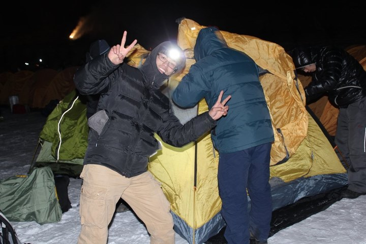 screen.width - 200){this.width = screen.width - 200}">
去年冬训的攀冰（好刺激啊，尽管第一次上去腿都在发抖）
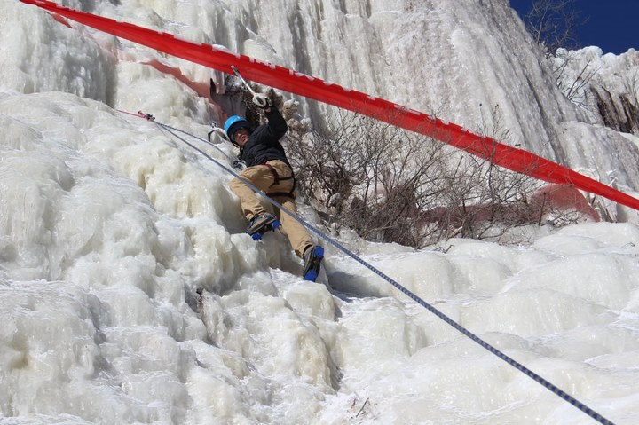 screen.width - 200){this.width = screen.width - 200}">
三尖的云海
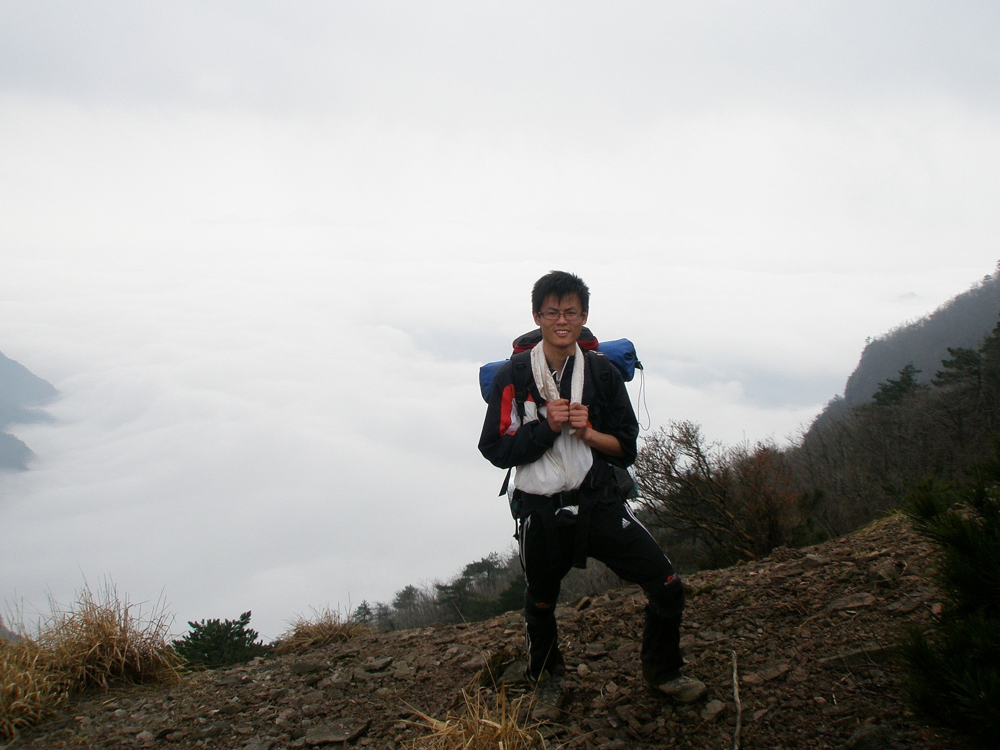 screen.width - 200){this.width = screen.width - 200}">
纵身一跃
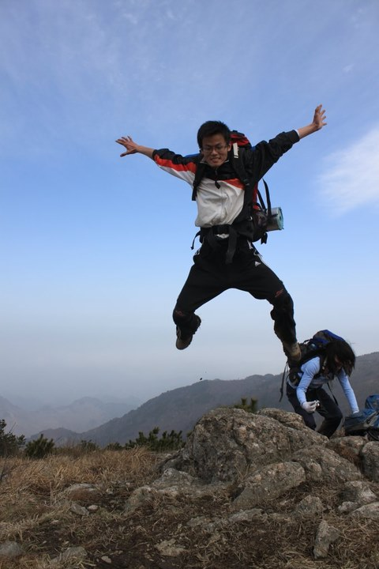 screen.width - 200){this.width = screen.width - 200}">
最后来张高难度的
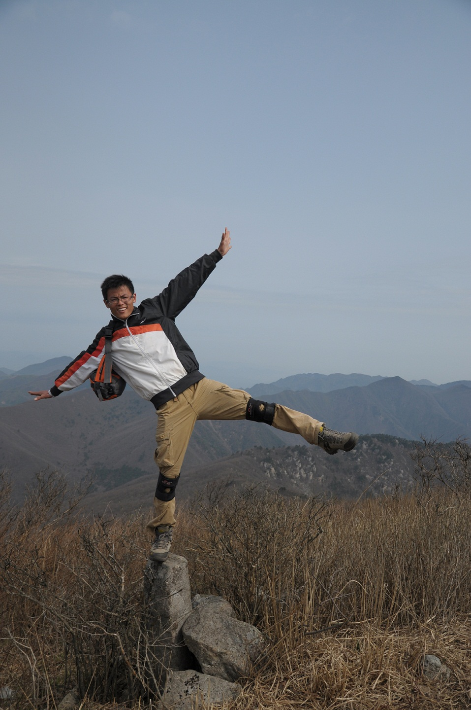 screen.width - 200){this.width = screen.width - 200}">
——————————————分割：团爆第三波———————————————
姓名：马瑞雪
性别：女
学院：材料
所属野协部门：装备部
加入野外生存协会已经一年了，这一年以来，真的是收获了好多。锻炼了体能，磨练
了意志，每次出行都是对自己体能和心理的极限的挑战。更重要的是，在这里收获了特别
特别多的好朋友。希望接下来的时间里能够参与到更过的活动中去，认识更多的好朋友。
先来张背影 哈哈 这样就看不见脸啦~（精彩在下面）
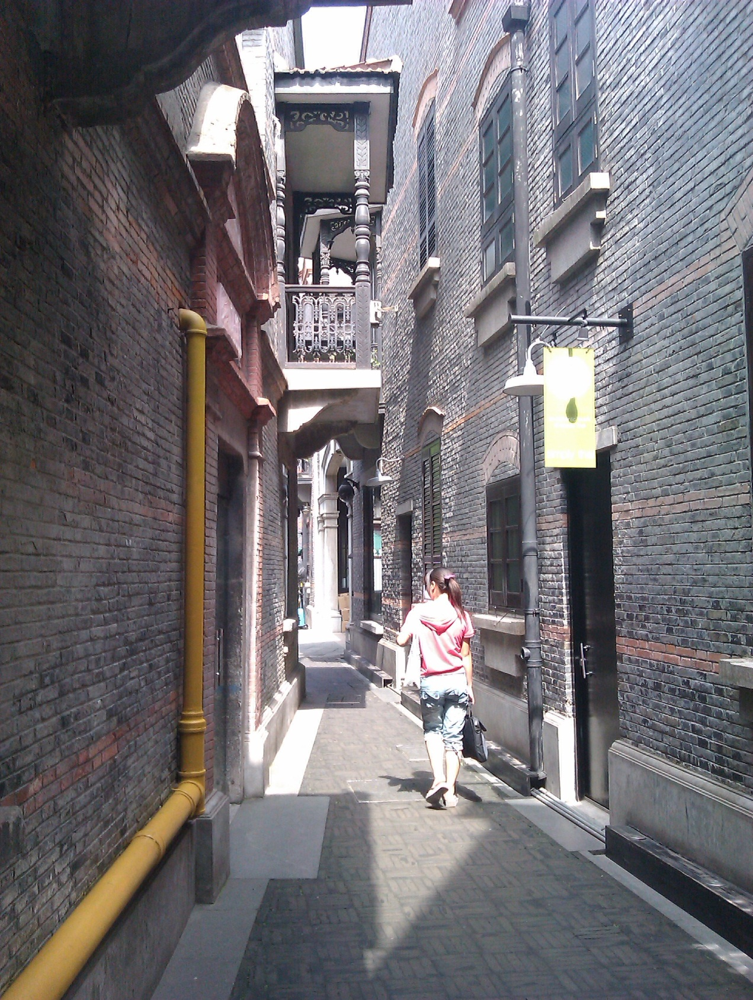 screen.width - 200){this.width = screen.width - 200}">
有没有很野协的味道啊~~~
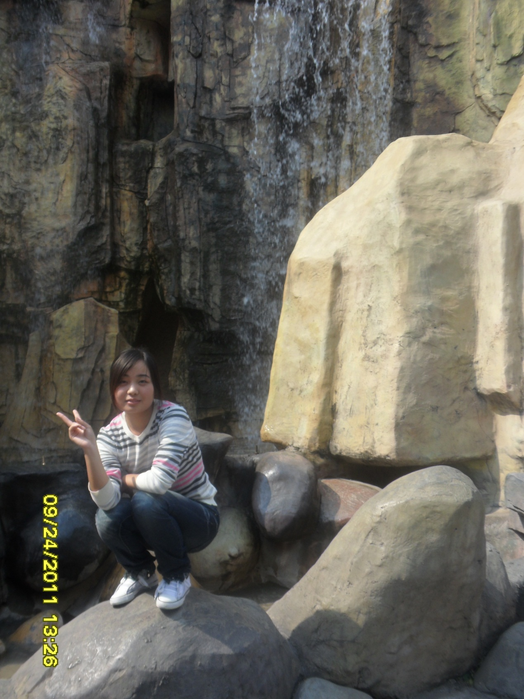 screen.width - 200){this.width = screen.width - 200}">
好自然哦~ 有么有有么有
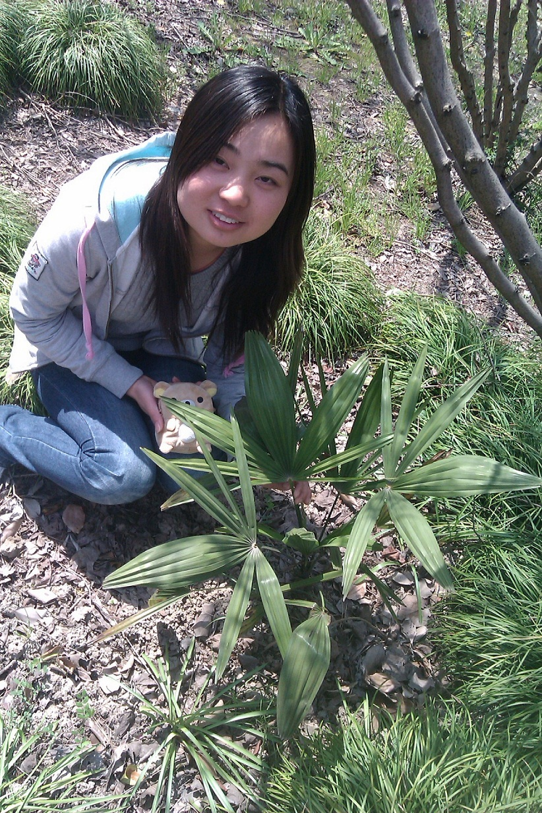 screen.width - 200){this.width = screen.width - 200}">
各位看官注意了此女子可摘
——————————————分割：团爆第四波———————————————
似乎活着。也许活着。只是活着。是个男的。未来也许也是。野协是个好地方。户外也是
个好地方。交大也许也是。山只是比我高而已。 我可以站着。站着很累吧。人很好。人们
很好。人群很好。在说什么。也许紧张了。
尼玛这撮货照片真难找，找半天才找到三尖破冰时的照片

--
※ 来源:·饮水思源 bbs.sjtu.edu.cn·[FROM: 58.196.168.97]
※ 修改:·MrYang 于 2012年05月30日00:17:01 修改本文·[FROM: 58.196.168.97]
|